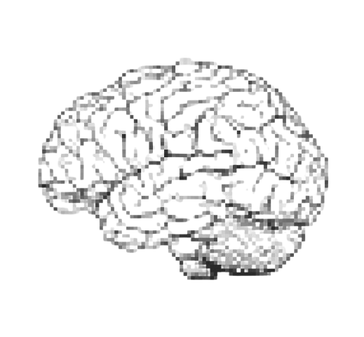

RTM (Stage 6 mois)
Structuration de données réelles complexes + restitution exploitable.
Sciences cognitives + culture/musique. Basée à Marseille. Je cherche un premier poste en coulisses (coordination / publics / production junior / pilotage)

Des cas concrets, un livrable lisible, et une logique “décision → action”.
Structuration de données réelles complexes + restitution exploitable.
Lecture publics/événements pour piloter une stratégie et clarifier les décisions.
Connexion création ↔ analyse utile : mini outil / restitution courte.
A little line about what’s being said and who’s saying it.
Master de Sciences cognitives communication, langage et cerveau : comprendre l’interaction entre le langage et la communication d’un point de vue neuronal.
Mathématiques, informatique appliqués aux sciences humaines et sociales : formation complète en mathématiques (statistiques, probabilités, analyse, etc.), informatique (Python, web, JS, Matlab, etc.) et sciences cognitives.

Formée en sciences cognitives, je m’intéresse aux projets culturels parce qu’ils sont humains, vivants et complexes.
Ce que j’aime : comprendre les publics, organiser les infos, faire le lien terrain ↔ décision,
et livrer des supports simples que l’équipe utilise vraiment.
Je cherche un premier poste dans une structure culturelle/musicale (coordination, production junior, publics, pilotage).
Basée à Marseille — disponibilité : à remplir.
Si tu as un projet culturel à structurer et des publics à comprendre : parlons.